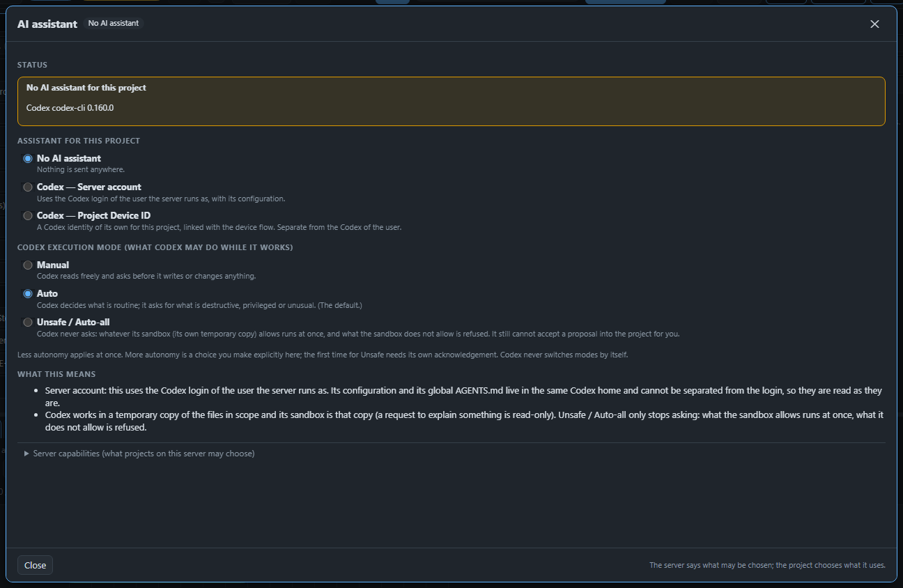
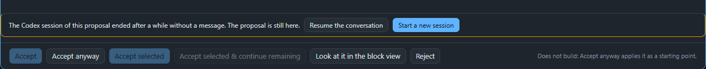

Page 20 of 21
Ask the AI assistant
Let Codex suggest a change, check it, and decide yourself whether it goes into the song.
AMPLE can ask Codex, an AI coding assistant, to change your song for you. It is off until you turn it on for a project, and it never changes your song by itself: Codex makes a proposal, AMPLE checks it, and you decide.

Turn it on#
Open Project settings and choose AI assistant. Pick one:
- Server account: Codex with the login of the person who runs AMPLE.
- Project Device ID: a Codex identity of its own for this project, linked once with a code.
Then pick what Codex may do while it works. Manual asks before it writes anything, Auto lets Codex decide what is routine, and Unsafe / Auto-all asks nothing. Codex always works in a temporary copy of your files, so even in Unsafe mode it cannot change your project. The first time you choose more autonomy, AMPLE asks you to confirm.
The owner of the machine decides what a project may choose at all (Server capabilities). A project can switch a capability off, but only the owner can allow more.
Ask for something#
Use AI in the source editor, on a block (right-click) or in the sequencer, and write what you want, for example "write a short comment above each block". Choose what Codex may look at: the selection, the file or the project. Codex can read the AMPLE documentation and your song, and it can ask you for a large file before it reads it.
Look at the proposal#
When Codex is done you see:
- What Codex says: its own summary.
- Changes: every changed file with the lines added and removed.
- Checks: whether the new song is valid and builds. If it builds you can listen to the result.
Press Accept to apply it. For the song this is one step that you can undo. Reject throws it away. If the proposal does not build, Accept is off, and Accept anyway needs a second confirmation. If you changed the song while Codex worked, AMPLE says so and can merge the two.
Look at the proposal in your own views#
Press Look at it in the block view at the bottom of the proposal. The proposed song opens in the normal Blocks view, read-only, under a yellow banner. Nothing is saved or changed, and clicking the banner takes you back to the proposal. There the Build and Play buttons work on the proposal, never on your project, and every sound block has a small play button that builds just that block. Right-click a block and choose Build and listen to this block to hear one part.
If you close the window, a small pill at the bottom right keeps the task: it shows whether Codex is working, waiting for you, or ready. Click it to come back.
Hum what you mean#
When notes are hard to describe, hum them. Press Hum a melody in the AI window, count in, and hum or sing one line on one vowel. AMPLE finds the notes (it is a guess, so you hear it next to your own voice and can change the tempo, the snapping and the key), and when you approve it Codex gets your recording and the melody it found. The same button is in the piano roll, where the notes go straight into the clip.
Give Codex a sound#
Sometimes it is easier to let Codex hear what you mean. Drag a sound onto the AI window, press Add audio…, or press Record a sound… to use the microphone. Each sound shows as a chip that you can play or remove. Codex gets a copy for this task only, so nothing lands in your project yet.
When you accept, the window lists Audio you offered Codex. The files the proposal uses are ticked and come along (otherwise the song would not find them); the others are optional. Undo takes them away again.
Hear what Codex means#
While it works, Codex can play you a piece of sound. A card Codex wants you to hear appears with the name of the block, whether it is the proposal or your project as it is now, the part it plays, and why. There are quick answers such as Yes, that is it and No, another one that fill the message box. This is how you sort out "which instrument do you mean?" without describing it.
Earlier requests#
AMPLE remembers what you asked before, also after a restart. In the AI window you can pick an earlier request of the same song to bring its text back and tweak it, and a result without changes has a button Continue this request…. You can also say "like before" or "undo that last thing" and Codex can look it up.
When the conversation has ended#
Codex closes its conversation after about half an hour without a message. The proposal stays, and you can still accept or reject it. If you want to go on, two buttons appear: Resume the conversation reconnects Codex to the same thread with everything it remembers, and Start a new session begins a fresh one in the same working copy. The new session is told what you asked, what is already changed and how many clips were delivered, so you do not have to explain it again.

That is the end of the guide. The reference help (the Help link) has the details of every setting.